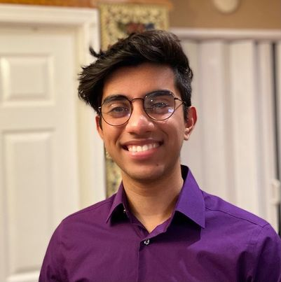

Efaz's Portfolio
This is my portfolio.
My name is Efaz Ahmed and I am a rising junior at Baruch College, NYC. My major is Data Analytics and my minor is Computer Science. I love to create Web Applications and software that involves Data Science.
Click here to see content created by server code.
Click here to get a random message:
My Journey in Becoming a Software Engineer
Beginning of my Journey
I am a Software Engineer. But, my interests didn't always revolve around Software or programming. Back in 2019, I've always wanted to become a Math Professor. Since Math was my favorite subject at the time, I'd always assumed that my career would be correlated to the field of Mathematics. It wasn't until the year of 2020, where I took AP CS Java, that sparked my interests in Computer Science. However, 2020 was also the year when the COVID-19 pandemic intially took place. This was a turning point in my career because learning become fully digitalized. After completing AP CS Java, it took it into my own hands to teach myself Python for the goal of improving my literacy in programming with respect to DSA and Data Science.
From High School to University
In transition to becoming a full-time University student, I've picked up a lot of skills using many online resources. But, the most valuable skill that I've learned was, ironically, how to learn. Learning is a skill that I've worked on greatly, and allowed me to be blessed with many opportunities regarding Software Engineering early in my career. This involves being the Director of SWE at Baruch AIS, an iOS Technical Program Manager at CodePath, and even participating as a Google SPS Participant.
My Future
My aspirations are to become a Googler, while learning extensively about data science. Although I have a lot of enjoyment with creating web applications and software, I see myself working as a Data Scientist that creates innovative solutions to solve complex problems.